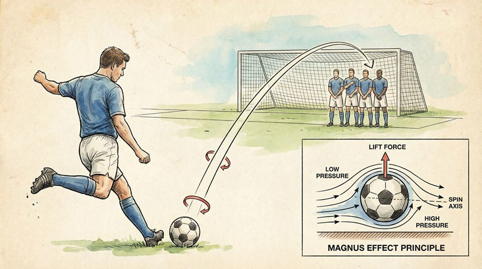

返回课程列表
第三课
运动学
柯南足球弹道与忍者手里剑的飞行轨迹
⏱️ 约50分钟
柯南踢出的足球总能精准命中目标，火影忍者的手里剑在空中旋转飞行。这些投射物的运动都可以用运动学来分析。
足球的弹道分析
足球在空中的运动受重力和空气阻力影响。旋转的足球还会产生马格努斯效应，使球偏转——这就是香蕉球的原理。

柯南足球的运动学
足球弹道的物理分析：
- 抛物线轨迹：无旋转时足球做标准抛体运动，最远射程角度约45°
- 香蕉球：侧旋产生马格努斯力，球在空中弯曲飞行
- 下坠球：上旋使球快速下坠，守门员难以判断落点
- 柯南的精准度：要在移动中精确命中目标，需要实时计算弹道补偿
- 《海尔兄弟》：海尔兄弟在冒险中多次利用抛物线轨迹投掷绳索跨越障碍
手里剑与飞刀的飞行力学
旋转的手里剑在飞行中保持姿态稳定，这是陀螺效应的应用。旋转产生的角动量使手里剑抵抗外力矩的干扰。
忍具的飞行力学
火影忍者中的投掷物理：
- 陀螺效应：手里剑高速旋转产生角动量，保持飞行姿态稳定
- 空气阻力：手里剑的十字形截面空气阻力大，有效射程有限
- 苦无投掷：不旋转的苦无需要精确控制出手角度，确保尖端朝前命中
- 多手里剑术：同时投掷多枚需要不同的出手角度和力度